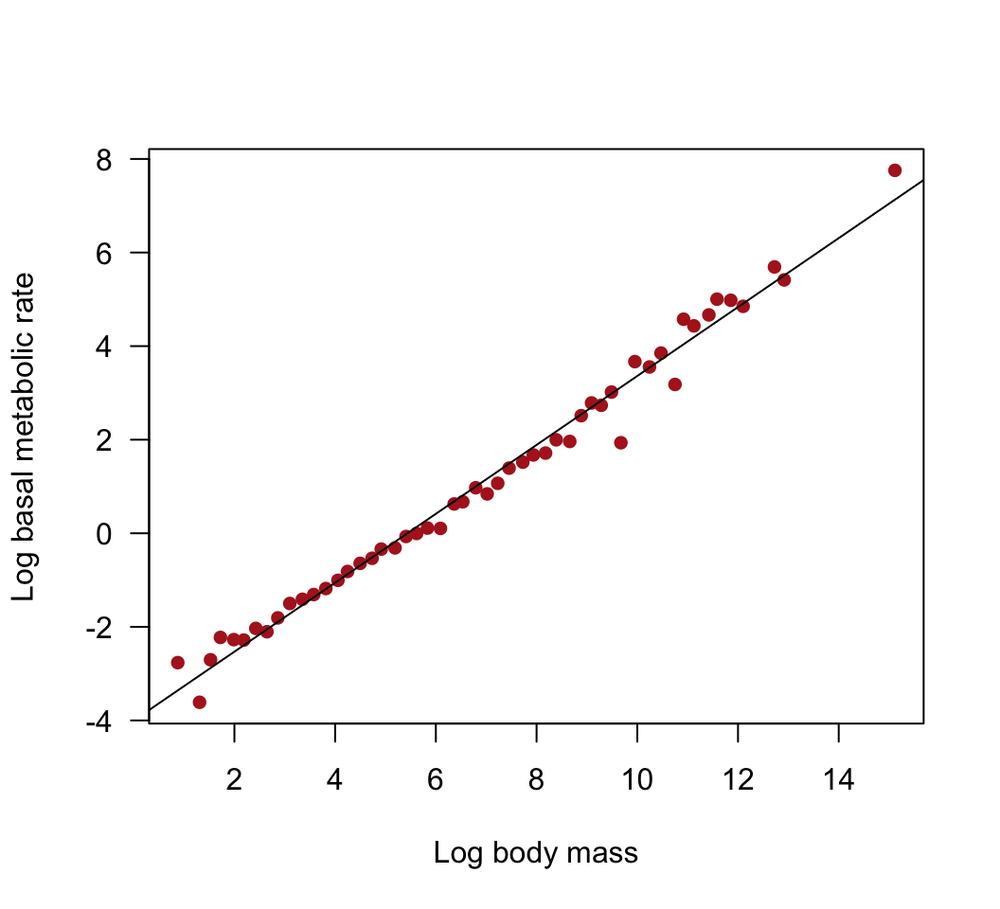
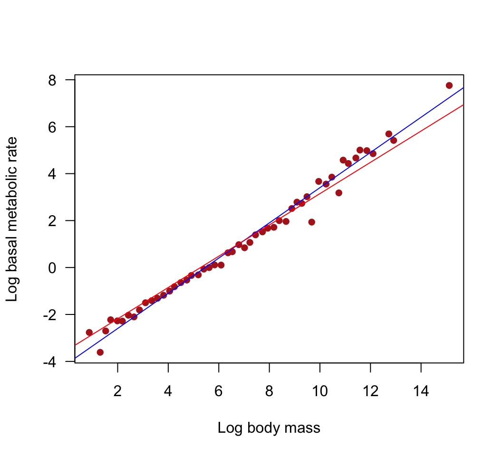
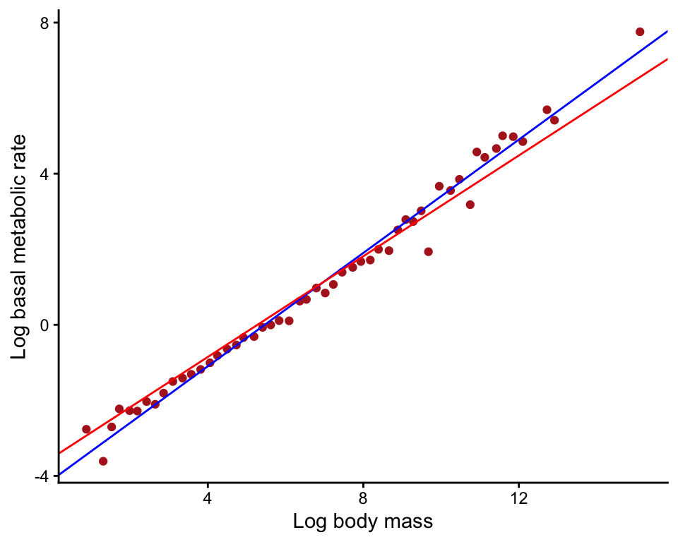
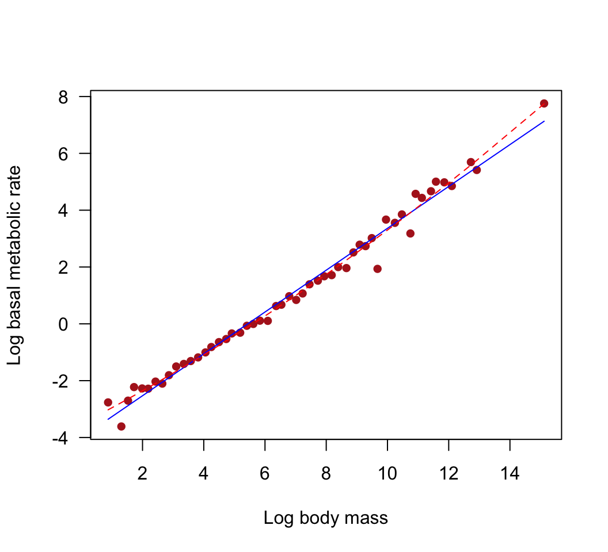
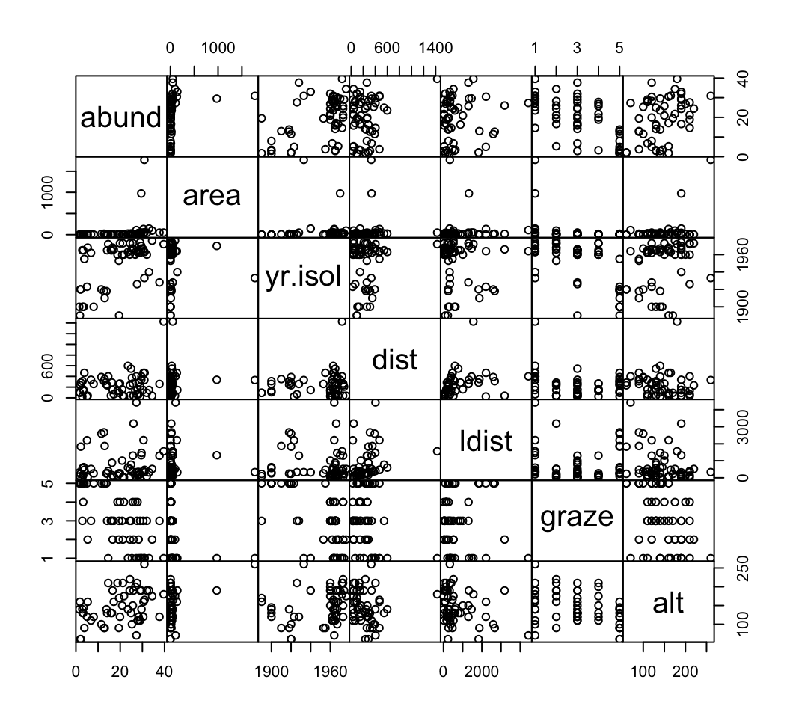
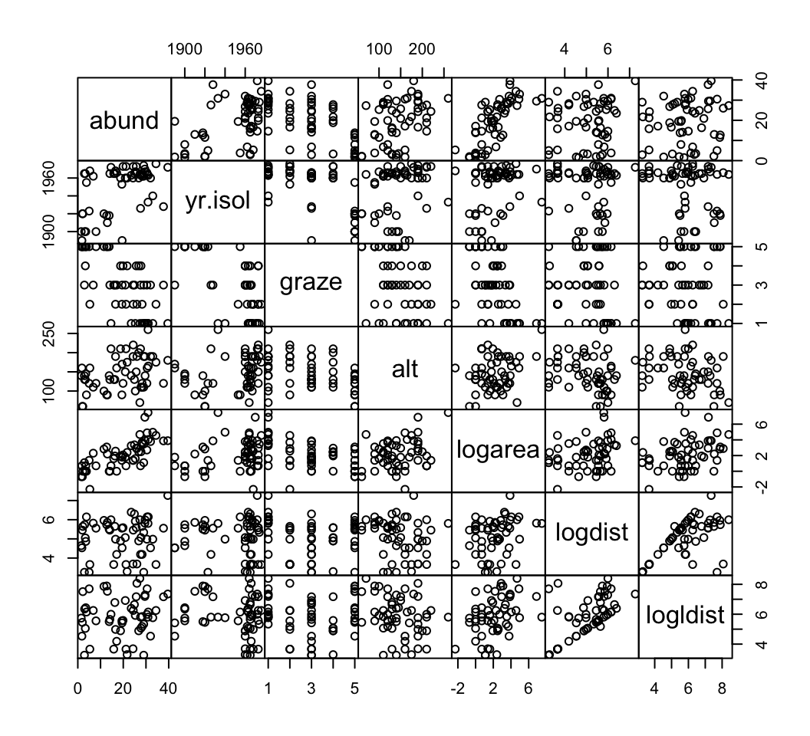
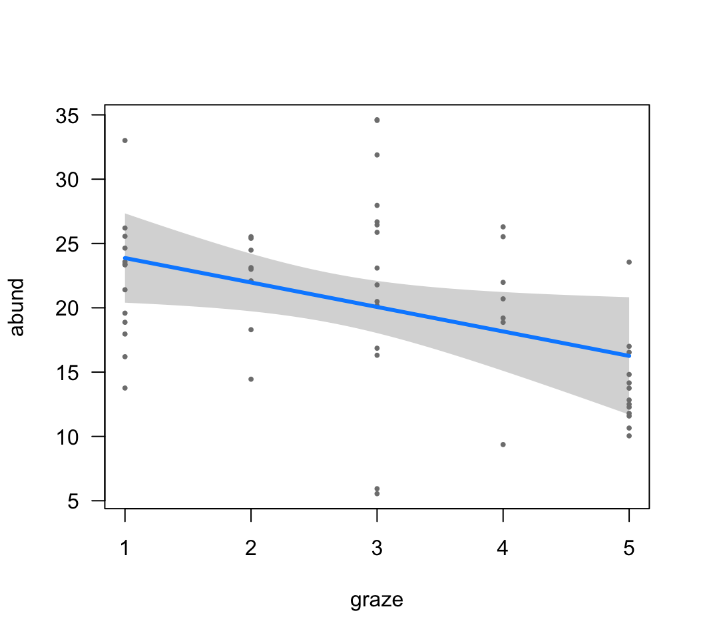
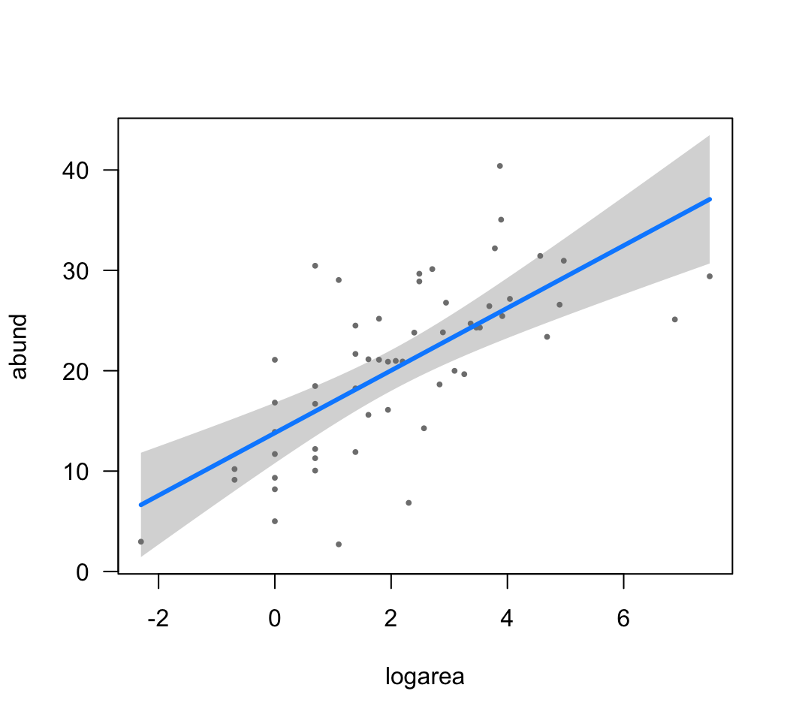
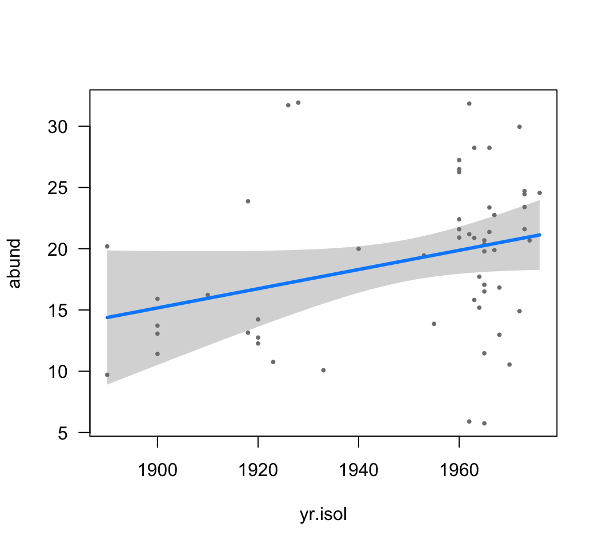

Selecting among candidate models requires a criterion for
evaluating and comparing models, and a strategy for searching the
possibilities. In this workshop we will explore some of the tools
available in R for model selection. You might need to download and
install the MuMIn package from the CRAN website to carry
out all the exercises.
For help with these exercises, see the “Fit model” link on the R tips web page.
Savage et al. (2004, Functional Ecology 18: 257-282) used data to reevaluate competing claims for the value of the allometric scaling parameter \(\beta\) relating whole-organism metabolic rate to body mass in endotherms: \[BMR = \alpha M^\beta\] In this formula \(BMR\) is basal metabolic rate, \(M\) is body mass, and \(\alpha\) is a constant. On a log scale this can be written as \[\log(BMR)=\log(\alpha)+\beta\log(M)\] where \(\beta\) is now a slope parameter of an ordinary linear regression – a linear model. Theory based on optimization of hydrodynamic flows through the circulation system predicts that the exponent should be \(\beta = 3/4\), whereas we would expect \(\beta =2/3\) if metabolic rate scales with heat dissipation and therefore body surface area. These alternative scaling relationships represent distinct biophysical hypotheses. We will use them as candidate models and apply model selection procedures to compare their fits to data.
Savage et al. compiled data from 626 species of mammals. To simplify, and reduce possible effects of non-independence of species data points, they took the average of \(\log(BMR)\) among species in small intervals of \(\log(M)\).
The resulting values of basal metabolic rate and mass can be downloaded here. Body mass is in grams, whereas basal metabolic rate is in watts.
Plot the data. Is the relationship between mass and metabolic rate linear on a log scale?
Fit a linear model to the log-transformed data (original data are not on the log scale). What is the estimate of slope?
Produce a 95% confidence interval for the slope. Does the interval include either of the candidate values for the scaling parameter \(\beta\)?
Add the least squares regression line from (2) to your plot.
Now let’s use model selection to compare the fits of the two candidate models to the data using the following steps.
To begin, you need to force regression lines having specified slopes through the (log-transformed) data. Replot the data indicating the relationship between \(\log(M)\) and \(\log(BMR)\). Add to this plot the best-fit line having slope 3/4. Repeat this for the slope 2/3. By eye, which line appears to fit the data best?
Compare the residual sum of squares of the two models you fit in (5). Which has the smaller value? Do these values agree with your visual assessment of your plots in (6)?
Calculate the log-likelihood of each model fitted in (5). Which has the higher value?
Calculate AIC for the two models, and the AIC difference*. By this criterion, which model is best? How big is the AIC difference?
In general terms, what does AIC score attempt to measure?
Calculate the Akaike weights of the two models**. Which has the higher weight of evidence in its favor? These weights could be used in Multimodel Inference (such as model averaging), which we won’t go into in this course. The weights should sum to 1. (They are sometimes wrongly interpreted as the posterior probability that the given model is the “best” model, assuming that the “best” model is one of the set of models being compared. This interpretation could work in some universes but it makes assumptions that we won’t go into right now.)
Summarize the overall findings. Do both models have some support, according to standard criteria, or does one of the two models have essentially no support?
Why is it not possible to compare the two models using a conventional log-likelihood ratio test***?
Optional: Both theories mentioned earlier predict that the relationship between basal metabolic rate and body mass will conform to a power law — in other words that the relationship between \(\log(BMR)\) and \(\log(M)\) will be linear. Is the relationship linear in mammals? Use AIC to compare the fit of a linear model fitted to the relationship between \(\log(BMR)\) and \(\log(M)\) with the fit of a quadratic regression of \(\log(BMR)\) on \(\log(M)\) (a model in which both \(\log(M)\) and \((\log(M))^2\) are included as terms). Don’t force a slope of \(2/3\) or \(3/4\). Plot both the linear and quadratic regression curves with the data. Which model has the most support? Which has the least? On the basis of this analysis, does the relationship between basal metabolic rate and body mass in mammals conform to a power law?
* 23.73591
** 9.99e-01 7.01e-06
***The models are not
nested.
library(ggplot2)
library(MuMIn)
library(visreg)
library(MASS)
library(car)
# 1. Plot the data
bmr <- read.csv(url("https://www.zoology.ubc.ca/~bio501/R/data/bmr.csv"),
stringsAsFactors = FALSE)
bmr$logmass <- log(bmr$mass.g)
bmr$logbmr <- log(bmr$bmr.w)
head(bmr)## mass.g bmr.w logmass logbmr
## 1 2.4 0.063 0.8754687 -2.764621
## 2 3.7 0.027 1.3083328 -3.611918
## 3 4.6 0.067 1.5260563 -2.703063
## 4 5.6 0.108 1.7227666 -2.225624
## 5 7.3 0.103 1.9878743 -2.273026
## 6 8.9 0.102 2.1860513 -2.282782plot(logbmr ~ logmass, data = bmr, las = 1, pch = 16, col = "firebrick",
xlab = "Log body mass", ylab = "Log basal metabolic rate")
# 2. Linear model
z <- lm(logbmr ~ logmass, data = bmr)
summary(z)##
## Call:
## lm(formula = logbmr ~ logmass, data = bmr)
##
## Residuals:
## Min 1Q Median 3Q Max
## -1.18771 -0.13741 0.01169 0.17836 0.62592
##
## Coefficients:
## Estimate Std. Error t value Pr(>|t|)
## (Intercept) -4.00329 0.09858 -40.61 <2e-16 ***
## logmass 0.73654 0.01261 58.42 <2e-16 ***
## ---
## Signif. codes: 0 '***' 0.001 '**' 0.01 '*' 0.05 '.' 0.1 ' ' 1
##
## Residual standard error: 0.3243 on 50 degrees of freedom
## Multiple R-squared: 0.9856, Adjusted R-squared: 0.9853
## F-statistic: 3413 on 1 and 50 DF, p-value: < 2.2e-16# 3. 95% confidence interval slope
confint(z)## 2.5 % 97.5 %
## (Intercept) -4.2013002 -3.8052825
## logmass 0.7112222 0.7618661# 4. Add the best-fit regression line to the plot in (1)
abline(z)
# 5. Fit the two candidate models
z1 <- lm(logbmr ~ 1 + offset( (3/4) * logmass ), data = bmr)
z2 <- lm(logbmr ~ 1 + offset( (2/3) * logmass ), data = bmr)
# 6. Replot
plot(logbmr ~ logmass, data = bmr, las = 1, pch = 16, col = "firebrick",
xlab = "Log body mass", ylab = "Log basal metabolic rate")
abline(a = coef(z1), b = 3/4, col = "blue")
abline(a = coef(z2), b = 2/3, col = "red")
Or using ggplot() method
ggplot(data = bmr, aes(x = logmass, y = logbmr)) +
geom_point(col = "firebrick") +
geom_abline(intercept = coef(z1), slope = 3/4, col = "blue") +
geom_abline(intercept = coef(z2), slope = 2/3, col = "red") +
labs(x = "Log body mass", y = "Log basal metabolic rate") +
theme_classic()
# 7. Compare the residual sum of squares
anova(z1)## Analysis of Variance Table
##
## Response: logbmr
## Df Sum Sq Mean Sq F value Pr(>F)
## Residuals 51 5.3777 0.10545anova(z2)## Analysis of Variance Table
##
## Response: logbmr
## Df Sum Sq Mean Sq F value Pr(>F)
## Residuals 51 8.4886 0.16644# 8. Log-likelihoods
c( logLik(z1), logLik(z2) )## [1] -14.79135 -26.65930# 9. AIC and AIC difference
c( AIC(z1), AIC(z2) )## [1] 33.58269 57.31860delta <- c(AIC(z1), AIC(z2)) - min(AIC(z1), AIC(z2))
delta## [1] 0.00000 23.73591# 11. Akaike weights of the two models
L <- exp(-0.5 * delta)
L/sum(L)## [1] 9.999930e-01 7.011488e-06# 14. Compare the fit of a linear and quadratic models
zlin <- lm(logbmr ~ logmass, data = bmr)
zquad <- lm(logbmr ~ logmass + I(logmass^2), data = bmr)
bmr$predictLin <- predict(zlin)
bmr$predictQuad <- predict(zquad)
plot(logbmr ~ logmass, data = bmr, las = 1, pch = 16, col = "firebrick",
xlab = "Log body mass", ylab = "Log basal metabolic rate")
lines(predictLin ~ logmass, col = "blue", data = bmr)
lines(predictQuad ~ logmass, col = "red", lty = 2, data = bmr)
c(AIC(zlin), AIC(zquad))## [1] 34.41123 21.58976c(AIC(zlin), AIC(zquad)) - min(c(AIC(zlin), AIC(zquad)))## [1] 12.82146 0.00000Let’s go data dredging now, unlike in the previous example, with all its attendant risks. We have no candidate models. Let’s just try all possibilities and see what turns up. The data include a set of possible explanatory variables and we want to known which model, of all possible models, is the “best”. Sensibly, we also wish to identify those models that are near-best and should be kept under consideration (e.g., for use in planning, or subsequent multimodel inference).
The response variable is the abundance of forest birds in 56 forest fragment in southeastern Australia by Loyn (1987, cited in Quinn and Keough [2024] and analyzed in their Box 8.2). Abundance is measured as the number of birds encountered in a timed survey (units aren’t explained). Six predictor variables were measured in each fragment:The data can be downloaded here.
Using histograms, scatter plots, or the pairs
command, explore the frequency distributions of the variables. Several
of the variables are highly skewed, which will lead to outliers having
excessive leverage. Transform the highly skewed variables to solve this
problem. (I log-transformed area, dist and
ldist. The results are not perfect.)
Use the cor command to estimate the correlation
between pairs of explanatory variables. The results will be easier to
read if you round to just a couple of decimals. Which are the most
highly correlated variables?
Using the model selection tool dredge() in the
MuMIn package, determine which linear model best predicts
bird abundance (use AIC as the criterion). dredge() carries
out an automated model search using subsets of the ‘global’ model
provided. Ignore interactions for this exercise. (You will need to
install the MuMIn package if you haven’t yet done
so.)
How many variables are included in the best model*?
Count the number of models in total having an AIC difference less than or equal to 7. This is one way to decide which models have some support and remain under consideration.
Another way to determine the set of models that have support is
to use AIC weights. Calculate the Akaike weights of all the models from
your dredge() analysis. How much weight is given to the
best model**? Are there common features shared among the models having
the highest weights?
How many models are in the “confidence set” whose cumulative weights reach 0.95***?
Use a linear model to fit the “best” model to the data. Produce a
summary of the results. Use visreg() to visualize the
conditional relationship between bird abundance and each of the three
variables in the “best” model one at a time. Visually, which variable
seems to have the strongest relationship with bird abundance in the
model?
Generate an ANOVA table for the best model. Use Type 2 or Type 3 sums of squares so that the order of entry of the main effects in the formula don’t affect the tests (there are no interactions). Why should we view the resulting \(P\)-values with a great deal of skepticism****?
Notice that in your ANOVA table, not all terms in the best model are stastically significant at \(P < 0.05\) and so would not be retained in a stepwise multiple regression process. Are you OK with this? Good.
* 3 plus intercept (plus variance of residuals makes “df” = 5
parameters estimated)
** 0.127
*** 20
**** Because we
arrived at this model by data dredging.
Let’s try analyzing the data using stepAIC() from the
MASS package instead. Despite its name the method is not
carrying out stepwise multiple regression. Rather, it is using a
stepwise search strategy (hopefully) to find the “best” model (the model
minimizing the AIC score) given certain restrictions. Restrictions
include higher order terms (e.g., interaction between two variables) not
being fitted without including corresponding lower order terms (e.g.,
main effects of those same variables). Unlike dredge() it
does not test all (restricted) subsets of the global model and so does
not provide a list of all other models that fit the data nearly equally
well as the “best” model. But it can be much faster if there are many
variables.
Return to the data set you just analyzed using
dredge() and run model selection using
stepAIC() instead. See the R tips pages on model selection
(under Fit model) for help interpreting the output. Did you arrive at
the same best model?
Run stepAIC again, but this time use a model that
includes all two-way interaction terms. This is already pushing the data
to the limit, because there are only 56 data points. View the printed
output on the screen to see the sequence of steps that
stepAIC takes to find the best model.
Estimate the coefficients of the best-fitting model.
Calculate AIC for the best model. How does it compare to the AIC value computed in previously for the best additive model (the best model without interaction terms)?** Does the additive model have “essentially no support”, as defined in lecture**?
* 360.7 vs 371.1
** Yes, because the AIC difference is
large, exceeding 10.
# 1. Read, plot and transform
# (I log-transformed <code>area</code>, <code>dist</code> and <code>ldist</code>.
# The results are not perfect.)
birds <- read.csv(url("https://www.zoology.ubc.ca/~bio501/R/data/birdabund.csv"),
stringsAsFactors = FALSE)
head(birds)## abund area yr.isol dist ldist graze alt
## 1 5.3 0.1 1968 39 39 2 160
## 2 2.0 0.5 1920 234 234 5 60
## 3 1.5 0.5 1900 104 311 5 140
## 4 17.1 1.0 1966 66 66 3 160
## 5 13.8 1.0 1918 246 246 5 140
## 6 14.1 1.0 1965 234 285 3 130pairs(birds, gap = 0)
birds2 <- birds[, c(1,3,6,7)]
birds2$logarea <- log(birds$area)
birds2$logdist <- log(birds$dist)
birds2$logldist <- log(birds$ldist)
pairs(birds2, gap = 0)
# 2. Correlation between explanatory variables
z <- cor(birds2)
round(z, 2)## abund yr.isol graze alt logarea logdist logldist
## abund 1.00 0.50 -0.68 0.39 0.74 0.13 0.12
## yr.isol 0.50 1.00 -0.64 0.23 0.28 -0.02 -0.16
## graze -0.68 -0.64 1.00 -0.41 -0.56 -0.14 -0.03
## alt 0.39 0.23 -0.41 1.00 0.28 -0.22 -0.27
## logarea 0.74 0.28 -0.56 0.28 1.00 0.30 0.38
## logdist 0.13 -0.02 -0.14 -0.22 0.30 1.00 0.60
## logldist 0.12 -0.16 -0.03 -0.27 0.38 0.60 1.00# 3. Best linear model
options(na.action = "na.fail")
birds.fullmodel <- lm(abund~., data = birds2)
birds.dredge <- dredge(birds.fullmodel, rank = "AIC")## Fixed term is "(Intercept)"head(birds.dredge, 25)## Global model call: lm(formula = abund ~ ., data = birds2)
## ---
## Model selection table
## (Int) alt grz lgr lgd lgl yr.isl df logLik AIC
## 39 -134.300 -1.902 3.112 0.07835 5 -180.555 371.1
## 40 -141.900 0.02586 -1.601 3.073 0.07991 6 -179.761 371.5
## 55 -113.400 -1.842 3.366 -0.7149 0.06941 6 -180.036 372.1
## 47 -120.500 -1.939 3.251 -0.8894 0.07354 6 -180.072 372.1
## 7 21.600 -2.854 2.992 4 -182.257 372.5
## 23 25.740 -2.630 3.348 -0.9511 5 -181.347 372.7
## 38 -236.700 0.03623 3.540 0.12480 5 -181.428 372.9
## 8 17.280 0.02468 -2.584 2.953 5 -181.577 373.2
## 15 26.630 -2.827 3.169 -1.0750 5 -181.582 373.2
## 48 -131.800 0.02145 -1.676 3.168 -0.5660 0.07658 7 -179.585 373.2
## 56 -127.700 0.02081 -1.624 3.234 -0.4331 0.07419 7 -179.597 373.2
## 63 -111.800 -1.884 3.368 -0.5458 -0.4805 0.06939 7 -179.908 373.8
## 37 -252.200 3.732 0.13520 4 -182.993 374.0
## 24 22.020 0.01615 -2.502 3.245 -0.7451 6 -181.093 374.2
## 31 27.280 -2.671 3.350 -0.5475 -0.7159 6 -181.225 374.5
## 16 22.110 0.01850 -2.632 3.095 -0.8027 6 -181.238 374.5
## 54 -225.800 0.03206 3.682 -0.3684 0.12050 6 -181.316 374.6
## 53 -223.900 4.001 -0.8221 0.12290 5 -182.360 374.7
## 46 -233.700 0.03413 3.602 -0.3024 0.12420 6 -181.380 374.8
## 64 -125.700 0.01951 -1.668 3.244 -0.3939 -0.2816 0.07387 8 -179.532 375.1
## 45 -241.900 3.867 -0.7971 0.13190 5 -182.638 375.3
## 32 23.560 0.01474 -2.546 3.256 -0.4328 -0.5771 7 -181.018 376.0
## 62 -226.000 0.03180 3.688 -0.1033 -0.3281 0.12070 7 -181.312 376.6
## 61 -224.400 4.011 -0.3060 -0.6920 0.12360 6 -182.322 376.6
## 6 3.959 0.04862 3.935 4 -187.342 382.7
## delta weight
## 39 0.00 0.127
## 40 0.41 0.103
## 55 0.96 0.078
## 47 1.04 0.076
## 7 1.40 0.063
## 23 1.59 0.057
## 38 1.75 0.053
## 8 2.05 0.046
## 15 2.06 0.045
## 48 2.06 0.045
## 56 2.09 0.045
## 63 2.71 0.033
## 37 2.88 0.030
## 24 3.08 0.027
## 31 3.34 0.024
## 16 3.37 0.024
## 54 3.52 0.022
## 53 3.61 0.021
## 46 3.65 0.020
## 64 3.95 0.018
## 45 4.17 0.016
## 32 4.93 0.011
## 62 5.51 0.008
## 61 5.54 0.008
## 6 11.57 0.000
## Models ranked by AIC(x)# 5. Models with delta AIC < 7
nrow(birds.dredge[birds.dredge$delta < 7, ])## [1] 24# 6. Akaike weights
w <- Weights(birds.dredge)
w## AIC model weights
## 39 40 55 47 7 23 38 8 15 48 56 63 37
## 0.127 0.103 0.078 0.076 0.063 0.057 0.053 0.046 0.045 0.045 0.045 0.033 0.030
## 24 31 16 54 53 46 64 45 32 62 61 6 22
## 0.027 0.024 0.024 0.022 0.021 0.020 0.018 0.016 0.011 0.008 0.008 0.000 0.000
## 21 14 30 29 5 13 3 52 20 4 19 35 36
## 0.000 0.000 0.000 0.000 0.000 0.000 0.000 0.000 0.000 0.000 0.000 0.000 0.000
## 51 11 12 60 28 44 27 43 59 50 58 42 34
## 0.000 0.000 0.000 0.000 0.000 0.000 0.000 0.000 0.000 0.000 0.000 0.000 0.000
## 49 33 41 57 18 10 26 2 1 9 17 25
## 0.000 0.000 0.000 0.000 0.000 0.000 0.000 0.000 0.000 0.000 0.000 0.000# 7. Models in the 95% "confidence set"
length(cumsum(w)[cumsum(w)< 0.95]) + 1## [1] 20# 8. Refit best linear model
bestmodel <- get.models(birds.dredge, 1)[[1]]
z <- lm(bestmodel, data = birds2)
summary(z)##
## Call:
## lm(formula = bestmodel, data = birds2)
##
## Residuals:
## Min 1Q Median 3Q Max
## -14.5159 -3.8136 0.2027 3.1271 14.5542
##
## Coefficients:
## Estimate Std. Error t value Pr(>|t|)
## (Intercept) -134.26065 86.39085 -1.554 0.1262
## graze -1.90216 0.87447 -2.175 0.0342 *
## logarea 3.11223 0.55268 5.631 7.32e-07 ***
## yr.isol 0.07835 0.04340 1.805 0.0768 .
## ---
## Signif. codes: 0 '***' 0.001 '**' 0.01 '*' 0.05 '.' 0.1 ' ' 1
##
## Residual standard error: 6.311 on 52 degrees of freedom
## Multiple R-squared: 0.6732, Adjusted R-squared: 0.6544
## F-statistic: 35.71 on 3 and 52 DF, p-value: 1.135e-12visreg(z, xvar = "graze")
visreg(z, xvar = "logarea")
visreg(z, xvar = "yr.isol")
# 9. ANOVA
Anova(z, type = 3)## Anova Table (Type III tests)
##
## Response: abund
## Sum Sq Df F value Pr(>F)
## (Intercept) 96.20 1 2.4152 0.12622
## graze 188.45 1 4.7315 0.03418 *
## logarea 1262.97 1 31.7094 7.316e-07 ***
## yr.isol 129.81 1 3.2590 0.07682 .
## Residuals 2071.14 52
## ---
## Signif. codes: 0 '***' 0.001 '**' 0.01 '*' 0.05 '.' 0.1 ' ' 1z <- lm(abund ~ ., data = birds2)
z1 <- stepAIC(z, direction = "both")## Start: AIC=214.14
## abund ~ yr.isol + graze + alt + logarea + logdist + logldist
##
## Df Sum of Sq RSS AIC
## - logldist 1 3.80 2000.7 212.25
## - logdist 1 4.68 2001.5 212.27
## - alt 1 27.02 2023.9 212.90
## <none> 1996.8 214.14
## - yr.isol 1 108.83 2105.7 215.11
## - graze 1 131.07 2127.9 215.70
## - logarea 1 1059.75 3056.6 235.98
##
## Step: AIC=212.25
## abund ~ yr.isol + graze + alt + logarea + logdist
##
## Df Sum of Sq RSS AIC
## - logdist 1 12.64 2013.3 210.60
## - alt 1 35.12 2035.8 211.22
## <none> 2000.7 212.25
## - yr.isol 1 121.64 2122.3 213.55
## - graze 1 132.44 2133.1 213.84
## + logldist 1 3.80 1996.9 214.14
## - logarea 1 1193.04 3193.7 236.44
##
## Step: AIC=210.6
## abund ~ yr.isol + graze + alt + logarea
##
## Df Sum of Sq RSS AIC
## - alt 1 57.84 2071.1 210.19
## <none> 2013.3 210.60
## - graze 1 123.48 2136.8 211.94
## - yr.isol 1 134.89 2148.2 212.23
## + logdist 1 12.64 2000.7 212.25
## + logldist 1 11.76 2001.5 212.27
## - logarea 1 1227.11 3240.4 235.25
##
## Step: AIC=210.19
## abund ~ yr.isol + graze + logarea
##
## Df Sum of Sq RSS AIC
## <none> 2071.1 210.19
## + alt 1 57.84 2013.3 210.60
## + logldist 1 38.04 2033.1 211.15
## + logdist 1 35.36 2035.8 211.22
## - yr.isol 1 129.81 2200.9 211.59
## - graze 1 188.45 2259.6 213.06
## - logarea 1 1262.97 3334.1 234.85# 11. Model selection using stepAIC()
z <- lm(abund ~ ., data = birds2)
z1 <- stepAIC(z, direction = "both")## Start: AIC=214.14
## abund ~ yr.isol + graze + alt + logarea + logdist + logldist
##
## Df Sum of Sq RSS AIC
## - logldist 1 3.80 2000.7 212.25
## - logdist 1 4.68 2001.5 212.27
## - alt 1 27.02 2023.9 212.90
## <none> 1996.8 214.14
## - yr.isol 1 108.83 2105.7 215.11
## - graze 1 131.07 2127.9 215.70
## - logarea 1 1059.75 3056.6 235.98
##
## Step: AIC=212.25
## abund ~ yr.isol + graze + alt + logarea + logdist
##
## Df Sum of Sq RSS AIC
## - logdist 1 12.64 2013.3 210.60
## - alt 1 35.12 2035.8 211.22
## <none> 2000.7 212.25
## - yr.isol 1 121.64 2122.3 213.55
## - graze 1 132.44 2133.1 213.84
## + logldist 1 3.80 1996.9 214.14
## - logarea 1 1193.04 3193.7 236.44
##
## Step: AIC=210.6
## abund ~ yr.isol + graze + alt + logarea
##
## Df Sum of Sq RSS AIC
## - alt 1 57.84 2071.1 210.19
## <none> 2013.3 210.60
## - graze 1 123.48 2136.8 211.94
## - yr.isol 1 134.89 2148.2 212.23
## + logdist 1 12.64 2000.7 212.25
## + logldist 1 11.76 2001.5 212.27
## - logarea 1 1227.11 3240.4 235.25
##
## Step: AIC=210.19
## abund ~ yr.isol + graze + logarea
##
## Df Sum of Sq RSS AIC
## <none> 2071.1 210.19
## + alt 1 57.84 2013.3 210.60
## + logldist 1 38.04 2033.1 211.15
## + logdist 1 35.36 2035.8 211.22
## - yr.isol 1 129.81 2200.9 211.59
## - graze 1 188.45 2259.6 213.06
## - logarea 1 1262.97 3334.1 234.85z1##
## Call:
## lm(formula = abund ~ yr.isol + graze + logarea, data = birds2)
##
## Coefficients:
## (Intercept) yr.isol graze logarea
## -134.26065 0.07835 -1.90216 3.11223# 12. Include all two-way interactions
z <- lm(abund ~ (.)^2, data = birds2)
z2 <- stepAIC(z, upper = ~., lower = ~1, direction = "both")## Start: AIC=222.63
## abund ~ (yr.isol + graze + alt + logarea + logdist + logldist)^2
##
## Df Sum of Sq RSS AIC
## - graze:logdist 1 0.003 1360.0 220.63
## - yr.isol:logldist 1 0.026 1360.0 220.63
## - alt:logdist 1 0.058 1360.1 220.64
## - logdist:logldist 1 0.572 1360.6 220.66
## - graze:alt 1 3.100 1363.1 220.76
## - graze:logldist 1 5.262 1365.3 220.85
## - yr.isol:logdist 1 11.826 1371.8 221.12
## - logarea:logdist 1 12.196 1372.2 221.13
## - logarea:logldist 1 20.330 1380.3 221.47
## - alt:logldist 1 20.369 1380.4 221.47
## - alt:logarea 1 24.223 1384.2 221.62
## - graze:logarea 1 26.546 1386.6 221.72
## - yr.isol:alt 1 26.559 1386.6 221.72
## - yr.isol:logarea 1 36.513 1396.5 222.12
## <none> 1360.0 222.63
## - yr.isol:graze 1 161.328 1521.3 226.91
##
## Step: AIC=220.63
## abund ~ yr.isol + graze + alt + logarea + logdist + logldist +
## yr.isol:graze + yr.isol:alt + yr.isol:logarea + yr.isol:logdist +
## yr.isol:logldist + graze:alt + graze:logarea + graze:logldist +
## alt:logarea + alt:logdist + alt:logldist + logarea:logdist +
## logarea:logldist + logdist:logldist
##
## Df Sum of Sq RSS AIC
## - yr.isol:logldist 1 0.045 1360.1 218.64
## - alt:logdist 1 0.055 1360.1 218.64
## - logdist:logldist 1 0.569 1360.6 218.66
## - graze:alt 1 3.213 1363.2 218.77
## - graze:logldist 1 9.220 1369.2 219.01
## - logarea:logdist 1 13.672 1373.7 219.19
## - alt:logldist 1 20.599 1380.6 219.48
## - logarea:logldist 1 23.052 1383.1 219.58
## - yr.isol:logdist 1 27.360 1387.4 219.75
## - yr.isol:alt 1 27.398 1387.4 219.75
## - graze:logarea 1 27.640 1387.7 219.76
## - alt:logarea 1 29.525 1389.5 219.84
## - yr.isol:logarea 1 37.337 1397.3 220.15
## <none> 1360.0 220.63
## + graze:logdist 1 0.003 1360.0 222.63
## - yr.isol:graze 1 194.657 1554.7 226.12
##
## Step: AIC=218.64
## abund ~ yr.isol + graze + alt + logarea + logdist + logldist +
## yr.isol:graze + yr.isol:alt + yr.isol:logarea + yr.isol:logdist +
## graze:alt + graze:logarea + graze:logldist + alt:logarea +
## alt:logdist + alt:logldist + logarea:logdist + logarea:logldist +
## logdist:logldist
##
## Df Sum of Sq RSS AIC
## - alt:logdist 1 0.052 1360.1 216.64
## - logdist:logldist 1 0.527 1360.6 216.66
## - graze:alt 1 3.169 1363.2 216.77
## - graze:logldist 1 14.092 1374.2 217.21
## - logarea:logdist 1 15.428 1375.5 217.27
## - alt:logldist 1 20.608 1380.7 217.48
## - logarea:logldist 1 27.209 1387.3 217.75
## - yr.isol:logdist 1 29.616 1389.7 217.84
## - yr.isol:alt 1 31.735 1391.8 217.93
## - graze:logarea 1 31.869 1391.9 217.93
## - alt:logarea 1 32.099 1392.2 217.94
## - yr.isol:logarea 1 43.797 1403.9 218.41
## <none> 1360.1 218.64
## + yr.isol:logldist 1 0.045 1360.0 220.63
## + graze:logdist 1 0.023 1360.0 220.63
## - yr.isol:graze 1 194.784 1554.8 224.13
##
## Step: AIC=216.64
## abund ~ yr.isol + graze + alt + logarea + logdist + logldist +
## yr.isol:graze + yr.isol:alt + yr.isol:logarea + yr.isol:logdist +
## graze:alt + graze:logarea + graze:logldist + alt:logarea +
## alt:logldist + logarea:logdist + logarea:logldist + logdist:logldist
##
## Df Sum of Sq RSS AIC
## - logdist:logldist 1 0.667 1360.8 214.67
## - graze:alt 1 3.471 1363.6 214.78
## - graze:logldist 1 14.281 1374.4 215.22
## - logarea:logdist 1 16.073 1376.2 215.30
## - logarea:logldist 1 29.605 1389.7 215.84
## - alt:logarea 1 32.129 1392.2 215.95
## - yr.isol:alt 1 33.316 1393.4 215.99
## - yr.isol:logdist 1 34.003 1394.1 216.02
## - graze:logarea 1 34.969 1395.1 216.06
## - alt:logldist 1 40.951 1401.1 216.30
## <none> 1360.1 216.64
## - yr.isol:logarea 1 54.393 1414.5 216.83
## + alt:logdist 1 0.052 1360.1 218.64
## + yr.isol:logldist 1 0.042 1360.1 218.64
## + graze:logdist 1 0.011 1360.1 218.64
## - yr.isol:graze 1 222.578 1582.7 223.13
##
## Step: AIC=214.67
## abund ~ yr.isol + graze + alt + logarea + logdist + logldist +
## yr.isol:graze + yr.isol:alt + yr.isol:logarea + yr.isol:logdist +
## graze:alt + graze:logarea + graze:logldist + alt:logarea +
## alt:logldist + logarea:logdist + logarea:logldist
##
## Df Sum of Sq RSS AIC
## - graze:alt 1 2.898 1363.7 212.78
## - graze:logldist 1 18.727 1379.5 213.43
## - logarea:logdist 1 23.605 1384.4 213.63
## - logarea:logldist 1 30.094 1390.9 213.89
## - yr.isol:alt 1 33.061 1393.8 214.01
## - alt:logarea 1 34.491 1395.3 214.07
## - graze:logarea 1 38.287 1399.1 214.22
## - alt:logldist 1 41.609 1402.4 214.35
## - yr.isol:logdist 1 41.909 1402.7 214.37
## <none> 1360.8 214.67
## - yr.isol:logarea 1 57.207 1418.0 214.97
## + logdist:logldist 1 0.667 1360.1 216.64
## + alt:logdist 1 0.192 1360.6 216.66
## + graze:logdist 1 0.008 1360.8 216.67
## + yr.isol:logldist 1 0.000 1360.8 216.67
## - yr.isol:graze 1 223.303 1584.1 221.18
##
## Step: AIC=212.79
## abund ~ yr.isol + graze + alt + logarea + logdist + logldist +
## yr.isol:graze + yr.isol:alt + yr.isol:logarea + yr.isol:logdist +
## graze:logarea + graze:logldist + alt:logarea + alt:logldist +
## logarea:logdist + logarea:logldist
##
## Df Sum of Sq RSS AIC
## - logarea:logdist 1 25.007 1388.7 211.80
## - graze:logldist 1 28.377 1392.1 211.94
## - logarea:logldist 1 32.029 1395.7 212.09
## - yr.isol:alt 1 33.892 1397.6 212.16
## - alt:logldist 1 38.726 1402.4 212.35
## - alt:logarea 1 45.754 1409.4 212.63
## - yr.isol:logdist 1 46.139 1409.8 212.65
## - graze:logarea 1 49.541 1413.2 212.78
## <none> 1363.7 212.78
## - yr.isol:logarea 1 74.795 1438.5 213.78
## + graze:alt 1 2.898 1360.8 214.67
## + alt:logdist 1 0.419 1363.3 214.77
## + graze:logdist 1 0.238 1363.4 214.78
## + logdist:logldist 1 0.095 1363.6 214.78
## + yr.isol:logldist 1 0.017 1363.7 214.78
## - yr.isol:graze 1 222.021 1585.7 219.23
##
## Step: AIC=211.8
## abund ~ yr.isol + graze + alt + logarea + logdist + logldist +
## yr.isol:graze + yr.isol:alt + yr.isol:logarea + yr.isol:logdist +
## graze:logarea + graze:logldist + alt:logarea + alt:logldist +
## logarea:logldist
##
## Df Sum of Sq RSS AIC
## - logarea:logldist 1 7.647 1396.3 210.11
## - graze:logldist 1 13.313 1402.0 210.34
## - yr.isol:logdist 1 23.990 1412.7 210.76
## - yr.isol:alt 1 29.485 1418.2 210.98
## - alt:logldist 1 32.060 1420.8 211.08
## - alt:logarea 1 37.527 1426.2 211.30
## - graze:logarea 1 46.646 1435.3 211.65
## <none> 1388.7 211.80
## - yr.isol:logarea 1 67.711 1456.4 212.47
## + logarea:logdist 1 25.007 1363.7 212.78
## + graze:logdist 1 11.313 1377.4 213.34
## + yr.isol:logldist 1 6.990 1381.7 213.52
## + logdist:logldist 1 5.412 1383.3 213.58
## + graze:alt 1 4.301 1384.4 213.63
## + alt:logdist 1 4.282 1384.4 213.63
## - yr.isol:graze 1 212.098 1600.8 217.76
##
## Step: AIC=210.11
## abund ~ yr.isol + graze + alt + logarea + logdist + logldist +
## yr.isol:graze + yr.isol:alt + yr.isol:logarea + yr.isol:logdist +
## graze:logarea + graze:logldist + alt:logarea + alt:logldist
##
## Df Sum of Sq RSS AIC
## - graze:logldist 1 8.526 1404.9 208.45
## - yr.isol:logdist 1 20.997 1417.3 208.95
## - yr.isol:alt 1 28.937 1425.3 209.26
## - alt:logldist 1 30.792 1427.1 209.33
## - alt:logarea 1 32.128 1428.5 209.38
## <none> 1396.3 210.11
## - graze:logarea 1 57.851 1454.2 210.38
## + graze:logdist 1 12.848 1383.5 211.59
## + yr.isol:logldist 1 7.749 1388.6 211.80
## + logarea:logldist 1 7.647 1388.7 211.80
## + graze:alt 1 4.856 1391.5 211.91
## + alt:logdist 1 4.769 1391.6 211.92
## - yr.isol:logarea 1 100.005 1496.3 211.98
## + logdist:logldist 1 0.651 1395.7 212.08
## + logarea:logdist 1 0.626 1395.7 212.09
## - yr.isol:graze 1 244.977 1641.3 217.16
##
## Step: AIC=208.45
## abund ~ yr.isol + graze + alt + logarea + logdist + logldist +
## yr.isol:graze + yr.isol:alt + yr.isol:logarea + yr.isol:logdist +
## graze:logarea + alt:logarea + alt:logldist
##
## Df Sum of Sq RSS AIC
## - yr.isol:logdist 1 20.776 1425.6 207.27
## - yr.isol:alt 1 25.024 1429.9 207.44
## - alt:logldist 1 39.643 1444.5 208.01
## - graze:logarea 1 49.331 1454.2 208.38
## <none> 1404.9 208.45
## - alt:logarea 1 53.564 1458.4 208.55
## + graze:logdist 1 19.974 1384.9 209.65
## + graze:alt 1 9.823 1395.0 210.06
## + graze:logldist 1 8.526 1396.3 210.11
## + logarea:logldist 1 2.860 1402.0 210.34
## + alt:logdist 1 2.383 1402.5 210.36
## + logdist:logldist 1 2.145 1402.7 210.37
## + logarea:logdist 1 0.610 1404.2 210.43
## + yr.isol:logldist 1 0.046 1404.8 210.45
## - yr.isol:logarea 1 116.372 1521.2 210.91
## - yr.isol:graze 1 260.447 1665.3 215.97
##
## Step: AIC=207.27
## abund ~ yr.isol + graze + alt + logarea + logdist + logldist +
## yr.isol:graze + yr.isol:alt + yr.isol:logarea + graze:logarea +
## alt:logarea + alt:logldist
##
## Df Sum of Sq RSS AIC
## - logdist 1 8.091 1433.7 205.59
## - alt:logldist 1 38.442 1464.1 206.76
## - graze:logarea 1 44.691 1470.3 207.00
## - alt:logarea 1 50.969 1476.6 207.24
## <none> 1425.6 207.27
## - yr.isol:alt 1 54.739 1480.4 207.38
## + yr.isol:logdist 1 20.776 1404.9 208.45
## + graze:alt 1 13.009 1412.6 208.76
## + graze:logldist 1 8.305 1417.3 208.95
## - yr.isol:logarea 1 98.416 1524.0 209.01
## + logdist:logldist 1 3.953 1421.7 209.12
## + logarea:logldist 1 1.296 1424.3 209.22
## + alt:logdist 1 0.689 1425.0 209.25
## + yr.isol:logldist 1 0.535 1425.1 209.25
## + graze:logdist 1 0.225 1425.4 209.26
## + logarea:logdist 1 0.187 1425.5 209.27
## - yr.isol:graze 1 253.153 1678.8 214.43
##
## Step: AIC=205.59
## abund ~ yr.isol + graze + alt + logarea + logldist + yr.isol:graze +
## yr.isol:alt + yr.isol:logarea + graze:logarea + alt:logarea +
## alt:logldist
##
## Df Sum of Sq RSS AIC
## - alt:logldist 1 38.160 1471.9 205.06
## - graze:logarea 1 42.558 1476.3 205.23
## - alt:logarea 1 47.587 1481.3 205.42
## <none> 1433.7 205.59
## - yr.isol:alt 1 53.683 1487.4 205.65
## + graze:logldist 1 11.379 1422.3 207.14
## + graze:alt 1 10.881 1422.8 207.16
## - yr.isol:logarea 1 95.540 1529.3 207.20
## + logdist 1 8.091 1425.6 207.27
## + logarea:logldist 1 2.582 1431.2 207.49
## + yr.isol:logldist 1 0.039 1433.7 207.59
## - yr.isol:graze 1 247.203 1680.9 212.50
##
## Step: AIC=205.06
## abund ~ yr.isol + graze + alt + logarea + logldist + yr.isol:graze +
## yr.isol:alt + yr.isol:logarea + graze:logarea + alt:logarea
##
## Df Sum of Sq RSS AIC
## - logldist 1 4.777 1476.7 203.24
## - alt:logarea 1 21.891 1493.8 203.89
## - yr.isol:alt 1 32.877 1504.8 204.30
## <none> 1471.9 205.06
## + alt:logldist 1 38.160 1433.7 205.59
## - graze:logarea 1 73.770 1545.7 205.80
## + graze:logldist 1 20.795 1451.1 206.26
## + logdist 1 7.810 1464.1 206.76
## + graze:alt 1 3.830 1468.1 206.91
## + yr.isol:logldist 1 2.381 1469.5 206.97
## + logarea:logldist 1 0.897 1471.0 207.03
## - yr.isol:logarea 1 173.397 1645.3 209.30
## - yr.isol:graze 1 242.803 1714.7 211.61
##
## Step: AIC=203.24
## abund ~ yr.isol + graze + alt + logarea + yr.isol:graze + yr.isol:alt +
## yr.isol:logarea + graze:logarea + alt:logarea
##
## Df Sum of Sq RSS AIC
## - alt:logarea 1 18.904 1495.6 201.96
## - yr.isol:alt 1 28.886 1505.5 202.33
## <none> 1476.7 203.24
## - graze:logarea 1 79.752 1556.4 204.19
## + graze:alt 1 6.075 1470.6 205.01
## + logldist 1 4.777 1471.9 205.06
## + logdist 1 2.067 1474.6 205.16
## - yr.isol:logarea 1 177.378 1654.0 207.59
## - yr.isol:graze 1 248.142 1724.8 209.94
##
## Step: AIC=201.95
## abund ~ yr.isol + graze + alt + logarea + yr.isol:graze + yr.isol:alt +
## yr.isol:logarea + graze:logarea
##
## Df Sum of Sq RSS AIC
## - yr.isol:alt 1 18.62 1514.2 200.65
## <none> 1495.6 201.96
## + alt:logarea 1 18.90 1476.7 203.24
## + graze:alt 1 18.26 1477.3 203.27
## + logdist 1 2.03 1493.5 203.88
## + logldist 1 1.79 1493.8 203.89
## - yr.isol:graze 1 229.47 1725.0 207.95
## - yr.isol:logarea 1 259.20 1754.8 208.91
## - graze:logarea 1 330.71 1826.3 211.14
##
## Step: AIC=200.65
## abund ~ yr.isol + graze + alt + logarea + yr.isol:graze + yr.isol:logarea +
## graze:logarea
##
## Df Sum of Sq RSS AIC
## - alt 1 32.19 1546.4 199.83
## <none> 1514.2 200.65
## + yr.isol:alt 1 18.62 1495.6 201.96
## + alt:logarea 1 8.64 1505.5 202.33
## + logdist 1 3.31 1510.9 202.53
## + graze:alt 1 0.36 1513.8 202.63
## + logldist 1 0.27 1513.9 202.64
## - yr.isol:logarea 1 241.21 1755.4 206.93
## - yr.isol:graze 1 243.50 1757.7 207.00
## - graze:logarea 1 332.95 1847.1 209.78
##
## Step: AIC=199.83
## abund ~ yr.isol + graze + logarea + yr.isol:graze + yr.isol:logarea +
## graze:logarea
##
## Df Sum of Sq RSS AIC
## <none> 1546.4 199.83
## + alt 1 32.19 1514.2 200.65
## + logldist 1 6.57 1539.8 201.59
## + logdist 1 0.01 1546.4 201.83
## - yr.isol:logarea 1 239.74 1786.1 205.90
## - yr.isol:graze 1 272.21 1818.6 206.91
## - graze:logarea 1 334.74 1881.1 208.80# 13. Estimate the coefficients of the best-fitting model.
summary(z2)##
## Call:
## lm(formula = abund ~ yr.isol + graze + logarea + yr.isol:graze +
## yr.isol:logarea + graze:logarea, data = birds2)
##
## Residuals:
## Min 1Q Median 3Q Max
## -16.1445 -2.8572 -0.3756 2.6846 11.6416
##
## Coefficients:
## Estimate Std. Error t value Pr(>|t|)
## (Intercept) 1012.42110 344.55122 2.938 0.00502 **
## yr.isol -0.50272 0.17527 -2.868 0.00607 **
## graze -204.03353 67.93366 -3.003 0.00420 **
## logarea -145.27312 53.17222 -2.732 0.00873 **
## yr.isol:graze 0.10176 0.03465 2.937 0.00504 **
## yr.isol:logarea 0.07438 0.02699 2.756 0.00819 **
## graze:logarea 1.22433 0.37593 3.257 0.00205 **
## ---
## Signif. codes: 0 '***' 0.001 '**' 0.01 '*' 0.05 '.' 0.1 ' ' 1
##
## Residual standard error: 5.618 on 49 degrees of freedom
## Multiple R-squared: 0.756, Adjusted R-squared: 0.7261
## F-statistic: 25.3 on 6 and 49 DF, p-value: 1.938e-13# 14. AIC comparison
AIC(z1, z2)## df AIC
## z1 5 371.1092
## z2 8 360.7471© 2009-2026 Dolph Schluter